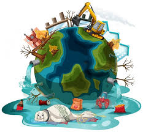
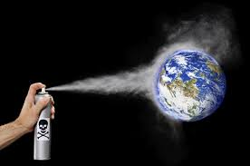
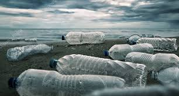
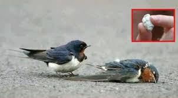
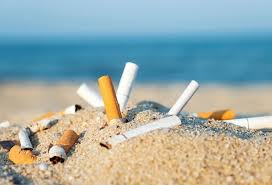
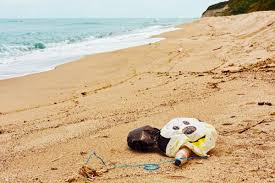
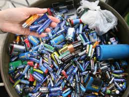
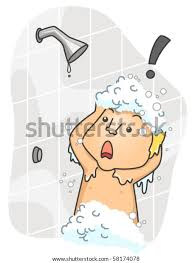

Que afecta al Medio Ambiente?

El cambio en el uso de la tierra continúa siendo la mayor amenaza, sin embargo otras presiones como la contaminación, la sobre cosecha, el cambio climático, el turismo insostenible y la invasión de especies extranjeras continúan exacerbando los ecosistemas ya estresados.
Sin embargo. El impacto humano es lo que mas afecta al medio ambiente, pues, los efectos de la urbanización, la agricultura y la ganadería industrial, la tala de bosques y las emisiones de CO2, entre otras acciones, aceleran la pérdida de la biodiversidad por el calentamiento global, la desertización o la contaminación de océanos y ríos.
A continuacion de presento las 10 actividades cotidianas que contaminan:
1-.Uso de desodorantes en aerosol.
Los sprays dañan la calidad del aire, aunque, según publicó la revista científica Nature Communications en 2018, sus efectos sobre la temperatura varían en función de la zona del mundo donde se utilizan.

2-.Uso excesivo de botellas de plastico.
Este tipo de recipientes tardan 500 años en descomponerse y liberan micropartículas perjudiciales para la salud.

3-.Arrojar un chicle en la calle.
La goma de mascar se compone, sobre todo, de plástico neutro y, además de ensuciar las calles, puede matar por asfixia a muchas aves si la confunden con alimento.

4-.Tirar colillas de cigarro en playas.
Ocupan el primer puesto del ranking de residuos más numerosos en las costas, tardan hasta 10 años en degradarse y desprenden metales contaminantes.

5-.Tirar papeles al inodoro.
Estos productos no se deshacen como el papel higiénico y causan la gran mayoría de los atascos en las depuradoras y los alcantarillados.
6-.Tirar un globo con helio al aire.
Resulta peligroso, en mayor medida, para las aves, los peces y otros animales marinos que pueden asfixiarse si los ingieren por error.

7-.Tirar las pilas a la basura.
Contienen mercurio —uno de los metales más tóxicos del mundo—, tardan entre 500 y 1.000 años en desaparecer y una sola de estas baterías puede contaminar hasta 3.000 litros de agua.

8-.Bañarnos sin cerrar el grifo.
La Universidad Estatal de Carolina del Norte (EE. UU.) calcula que podríamos ahorrar más de 1.400 litros mensuales de agua por persona solo con cerrar el grifo al lavarnos las manos y los dientes.

9-.Tirar mallas de paquetes sin cortar.